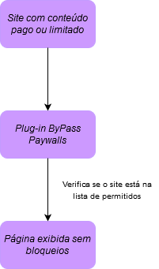
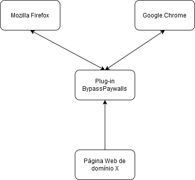
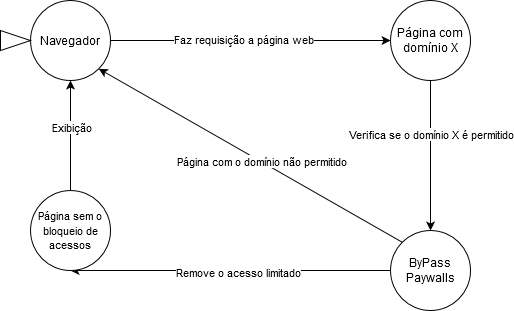

Documentação arquitetural do Bypass PayWalls
Autores
Este documento foi produzido por Sammara Beserra Nunes.
- Matrícula: 116210039
- Contato: sammara.nunes@ccc.ufcg.edu.br
- Projeto documentado: https://github.com/iamadamdev/bypass-paywalls-chrome
Descrição Arquitetural – Serviço de análise do twitter
Este post descreve a arquitetura do projeto ByPass PayWalls. Essa descrição foi baseada principalmente no modelo C4.
Descrição Geral sobre o Parlametria
O Bypass PayWalls é uma extensão para os navegadores Google Chrome e Mozilla Firefox que permite o acesso a certos sites que antes eram bloqueados por acesso pago.
O Serviço de monitoramento do twitter
Objetivo Geral
É uma extensão de navegador que permite o acesso a páginas que são permitidas apenas a assinantes, assim como a limitação dessas mesmas leituras.
Objetivos Específicos
Permitir que o conteúdo seja divulgado a quem não pode pagar com uma ferramenta também gratuita.
Contexto
O plug-in em questão funciona com a manipulação de cookies e arquivos javascript, oferecendo um serviço semelhante aos bloqueadores de anúncio, porém bloqueando acesso pago (ou “paywalls”), possibilitando a leitura de artigos bloquados e/ou limitados. Antes de executar alguma remoção, ele verifica se o domínio do site está na lista pré-configurada de “domínios permitidos”. Caso contrário, permanecerá o acesso bloqueado.
Containers
Como trata-se se um plug-un, não há muitos containers. Apenas o navegadores permitidos (Mozilla Firefox e Chrome), o plug-in e a página a ser manipulada pelo plug-in.
Componentes
No diagrama de containers, podemos ter uma visão se seus principais serviços para que ele funcione. Como se trata de um plug-in para navegador, seus componentes estão, sua maioria, no seu código (escrito em javascript) e consiste em um arquivo sites.js que armazena todos os sites permitidos em uma const, além da comunição com os navegadores Google Chrome e Firefox. Lembrando que é sempre recomendado limpar os cookies do navegador antes de ver se é algum erro do plug-in.

Código
Nesta etapa não faremos diagramas que apresentam detalhes da implementação. Faremos isso mais adiante.
Visão de Informação
O plug-in coleta o domínio da página e, caso seja um domínio permitido, ele manipula a visualização caso seja uma página com o acesso bloquado.
Contribuições Concretas
Ainda nenhum.